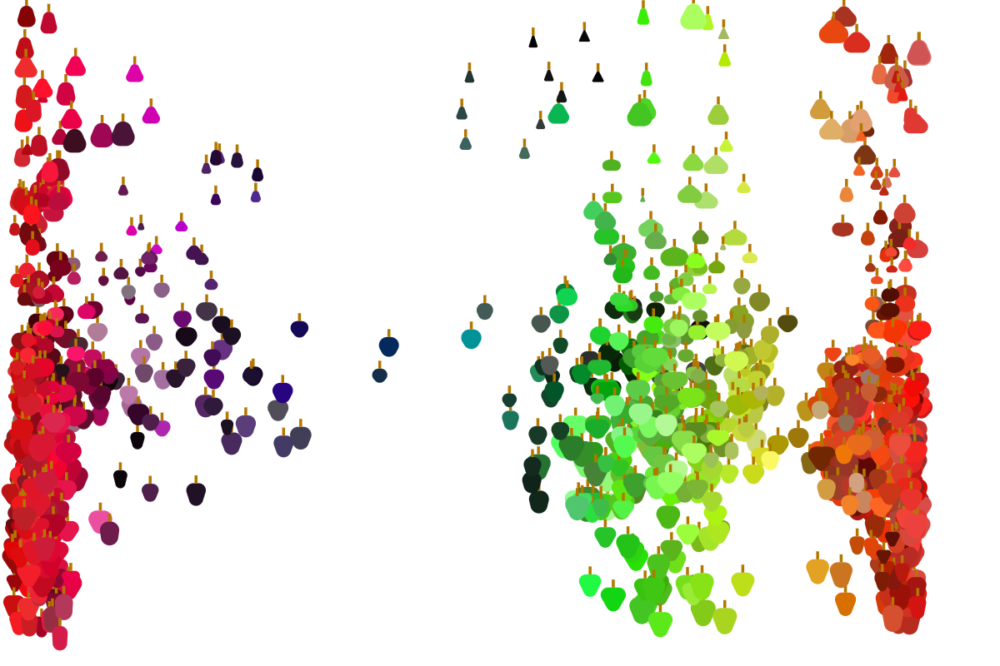

Multisensory Humor Detection
Most humor detection models only focus on language and the text itself. This is effective for traditional one-liners, but humor is often contextual and dependent on visual cues - after all, if you're not a shark, there may not be anything inherently amusing about carrying groceries. So how well do these models perform in a world of comic strips and memes? And can these models be improved by integrating contextual input parameters? Using data from the New Yorker Caption Contest, we combined NLP and ML techniques to create a multisensory humor detection model and improved detection accuracy of contextual humor. You can read a brief paper about the project here.

Learning Category Structure through Multidimensional Scaling
Multidimensional scaling (MDS) has provided insight into the structure of human category perception. However, MDS usually requires participants to produce large numbers of similarity judgements, leading to prohibitively long experiments for developmental research. We propose and validate a method that combines simple grouping tasks with recent neural network models to efficiently uncover ‘psychological spaces’ of categories. We apply this method to data from the World Color Survey and successfully uncover language-specific color organization. We also use this method to analyse data from a novel developmental experiment, and reaffirm age-related differences in conceptual spaces. We've presented our findings at the Annual Meeting of the Cognitive Science Society and the Budapest CEU Conference on Cognitive Development.

Reducing Avoidable Nursing Facility Hospitalizations
Long-stay nursing facility residents often experience hospitalizations for conditions that can be treated within the facility. Since hospitalizations are typically expensive, disruptive, and disorienting to senior nursing facility residents, minimizing these potentially avoidable hospitalizations improves residents’ quality of care. In 2012, The Centers for Medicare and Medicaid Services (CMS) launched an initiative to reduce avoidable hospitalizations by implementing clinical and educational interventions, providing billing incentives, and/or adding support staff to select nursing facilities across six states. Our report evaluates the success of the Initiative, and broadly finds that facilities within the initiative reduced hospitalizations, but billing and payment incentives did not consistently result in additional significant reductions.
R Essentials Package
The Department of Statistical Sciences (DoSS) at the University of Toronto has recently seen a sharp increase in applications and interest. Students from a wide array of backgrounds are beginning to take courses in statistics, and the DoSS is looking for a way to streamline R education across courses. The DoSS Toolkit is a free series of open source R lessons available to undergraduate students at the university as well as the general public. Covering everything from installation to tidyverse functions, these lessons include video tutorials, detailed walk-throughs, and sample exercises. We are currently working on completing these modules and creating summative assessments.